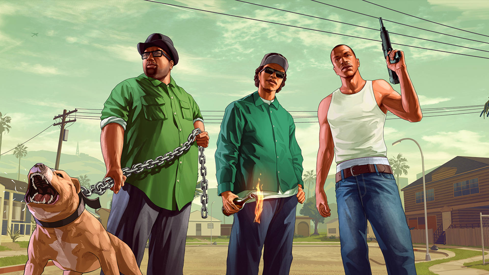
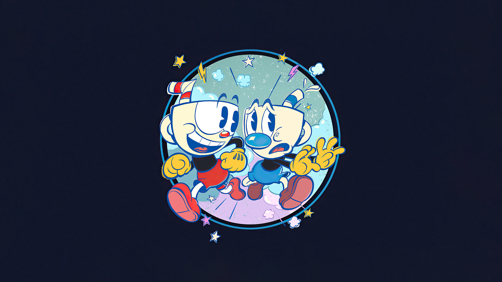
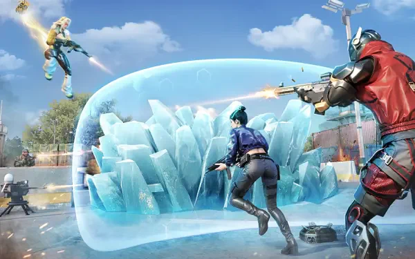

É amplamente reconhecido como um dos títulos mais icônicos e revolucionários da história dos videogames. Ambientado no início dos anos 90, o jogo transporta você para o vasto estado fictício de San Andreas, que abrange três cidades principais inspiradas em metrópoles reais da Califórnia e Nevada.Um marco nos jogos de mundo aberto. Você assume o papel de Carl Johnson (CJ), que retorna para sua cidade natal após anos e se vê envolvido em uma trama de corrupção, gangues e lealdade. O jogo oferece uma liberdade sem precedentes, permitindo personalizar o personagem, dirigir diversos veículos e explorar três cidades imensas.
| Componente | Requisito |
|---|---|
| Processador | Pentium III ou AMD Athlon 1GHz |
| Memória RAM | 256 MB |
| Placa de Vídeo | 64 MB (GeForce 3 ou superior) |
| Armazenamento | 3.6 GB de espaço livre |

É uma obra-prima do gênero de ação e plataforma, reconhecida mundialmente pelo seu estilo visual único e dificuldade desafiadora.Famoso por sua arte inspirada nos desenhos animados da década de 1930, Cuphead é um jogo de ação frenética focado em batalhas contra chefes. Com trilha sonora de jazz original e animações feitas à mão, o jogo exige reflexos rápidos e muita paciência para superar seus desafios implacáveis.
| Componente | Requisito |
|---|---|
| Processador | Intel Core2 Duo E8400 / AMD Athlon 64 X2 |
| Memória RAM | 3 GB |
| Placa de Vídeo | Geforce 9600 GT / AMD HD 3870 512MB |
| DirectX | Versão 11 |

É um Battle Royale de tiro em primeira pessoa (FPS) que se destaca pela sua agilidade extrema e foco em combate tático rápido. Projetado para ser leve, ele oferece uma experiência competitiva de alta performance mesmo em dispositivos com hardware mais modesto.Um Battle Royale FPS de ritmo acelerado projetado para dispositivos móveis e PCs de baixo custo. O jogo foca em movimentação fluida, operadores com habilidades únicas e uma vasta personalização de armas. Ideal para quem busca ação competitiva sem exigir um hardware de última geração.
| Componente | Requisito |
|---|---|
| Processador | Intel Core i3 4130 / AMD equivalente |
| Memória RAM | 4 GB |
| Placa de Vídeo | Intel HD Graphics 520 (Integrada) |
| Sistema | Windows 7 / 10 / 11 |